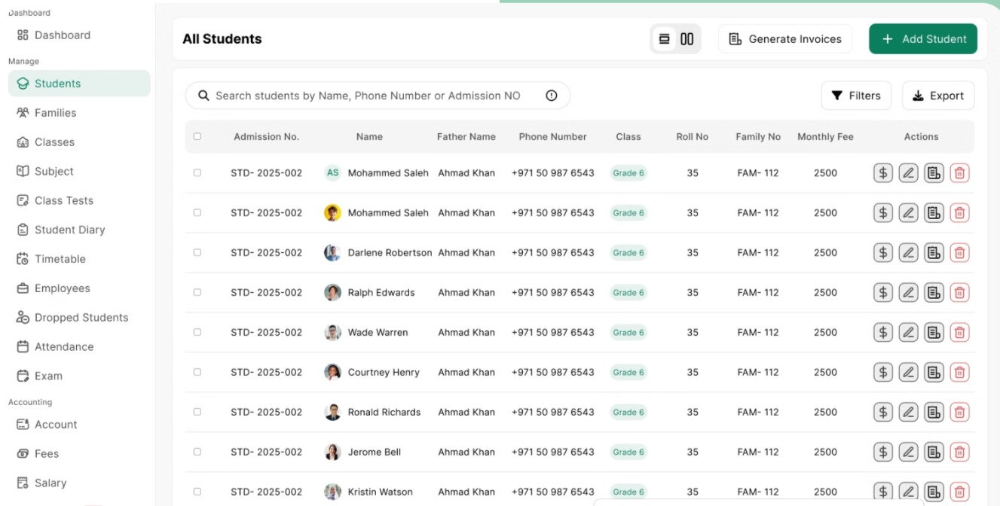
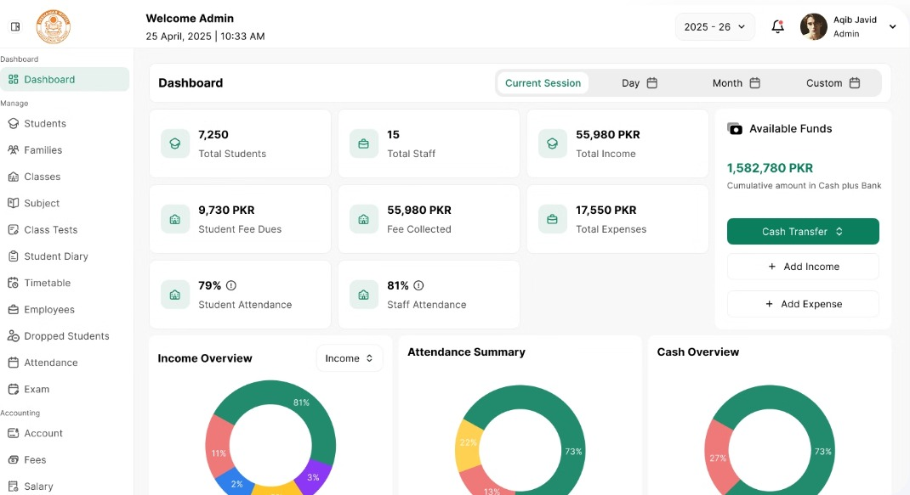
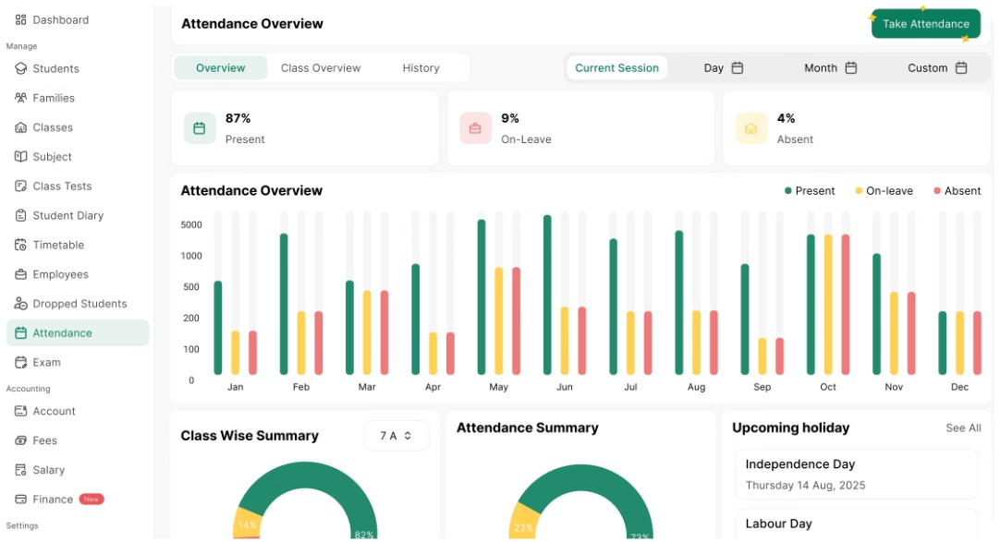

Case 04 · School management SaaS · Pakistan
Fees calculated by hand from those same registers. Maktab was the company's own product, not a client engagement, which meant nobody was paying for milestones. It had to earn its own customers.
Role
Product Manager, UI/UX, QA
Duration
25 sprints, concept to deployment
Type
Company product
Outcome
Shipped, sold, then wound down

01
Schools were running on paper registers. Every student record, every fee, every calculation.
Student data lived in physical registers on a shelf. Finances were worked out by hand from those same registers, which meant fee collection, dues and expenses were only as accurate as whoever last added them up. There was no single place to look at a school and see how it was actually doing.
The problem wasn't that schools lacked software. It was that everything a school knows about itself sat in books nobody could query, reconcile or trust. Digitising the records mattered less than putting them all in one place.
02
On this one I was product manager, UI/UX and QA at the same time.
That's a real constraint, not a boast. Every hour spent designing a flow was an hour not spent testing one, and the person deciding what to build was also the person deciding whether it was good enough to ship. It makes a small team fast, and it removes the check that normally catches a product manager's blind spots.
03
04
05
Student records, fee management, attendance and financial dashboards, in one place, replacing the registers rather than sitting alongside them.


06
0
sprints, concept to deployment
Live
in real schools, on paid subscriptions
2
modules fully replacing paper
Schools that ran on paper registers ran on Maktab instead, and paid a setup fee and a monthly subscription to do it. The product worked, sold, and onboarded customers.
Schools aren't named and no customer logos appear here, at their request.
07
The product wasn't the problem. Nobody was selling it.
Maktab shipped, worked, and won paying schools. It was eventually wound down, and the reason wasn't the build. It was that a company product needs demand created for it, and that work never started early enough to matter.
I raised this with management while we were still building: if we want our own product rather than client work, the marketing has to start first and start early. Client projects arrive with a customer already attached. A company product has to go and find its customers, and that is a workstream with its own timeline, not something you bolt on after launch.
I stand by the delivery decisions on this project. The one I'd change is the scope of my own role: on a company product, go-to-market belongs inside product management, not next to it.